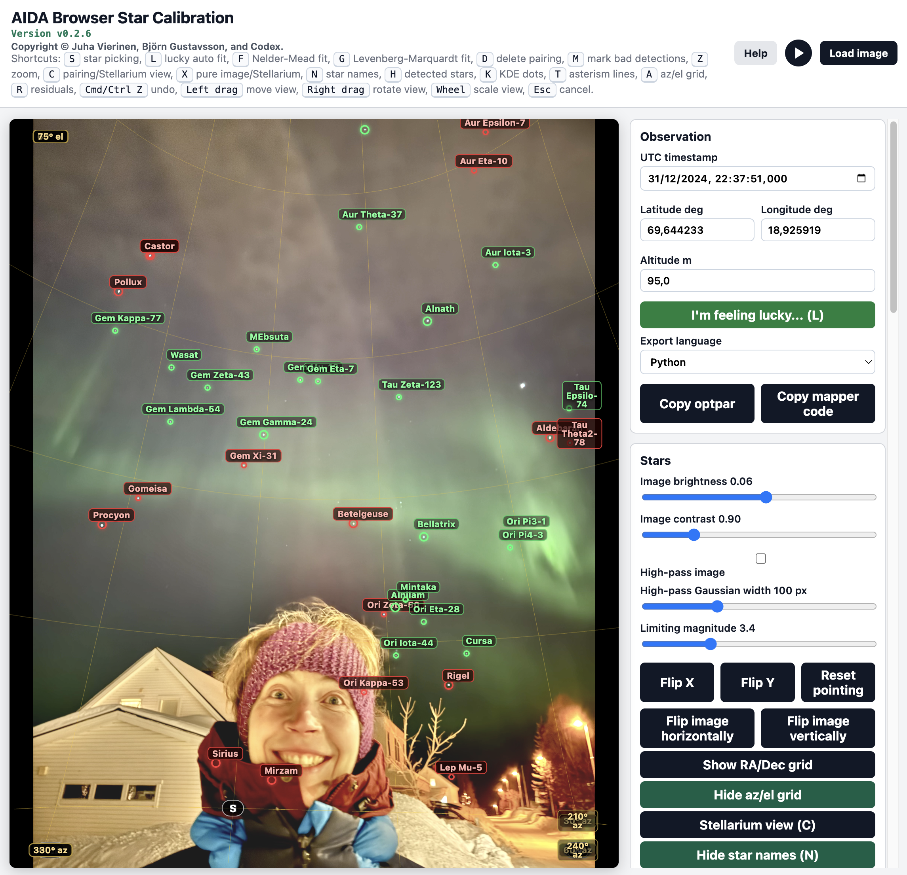

Generated from README.md. Edit the README and run npm run help:generate to update this page.
WISC - Widefield Star Calibrator

This repository contains WISC, the Widefield Star Calibrator, a stand-alone JavaScript wide-field star calibration tool. WISC can run star finding, asterism matching, and lens-model fitting as a somewhat robust automated process. The strength of the code, and the reason for the JavaScript implementation, is the interactive browser GUI for fine tuning, inspection, and completely manual star-pairing based optical model fitting assisted by the Yale Bright Star Catalogue. This is useful for difficult images that do not automatically plate solve cleanly. However, it can also be installed and run on the command line like a normal Linux/Unix command-line program named wisc; see the command-line section below.
Authors: Juha Vierinen and Björn Gustavsson. More authors can be added later. Merge requests are welcome!
Acknowledgements: The tool was inspired by the legendary aurora image data analysis (AIDA) MATLAB tools. This repository only implements the lens-model calibration parts needed by the browser and command-line calibrator. Original AIDA_tools MATLAB toolbox: https://github.com/jvierine/AIDA_tools. Thank you to Daniel Kastinen for suggesting making this a web page. The blind asterism-search ideas are also informed by astrometry.net. The star-detection experiments and reports were also informed by SExtractor and SEP. Codex is gratefully acknowledged for contributions to implementation and testing.
License: Creative Commons Attribution 4.0 International (CC BY 4.0). See LICENSE.md.
Try the hosted version here:
http://4.235.86.214/aida/

The tool is fully client-side JavaScript, with the GUI rendered in WebGL. For normal GUI use, no installation is required: open the hosted link above in a browser, or open index.html directly from a local checkout:
git clone https://github.com/jvierine/widefield-star-calibrator.git
code widefield-star-calibrator
# open index.htmlDDR data policy disclaimer: all data goes directly to STASI main archives. Just kidding. Most calibration work is purely client-side JavaScript. If the app is served by tools/serve_calibrator.js, the optional "Submit as test case" button uploads the current calibrated test case to that server.
Kudos to the person who finds all the easter eggs hidden in the GUI.
What It Does
- Fits optical models manually in the browser by picking image stars and pairing them with catalog stars.
- Fits optical models automatically with the
L/I'm feeling luckyworkflow, which detects stars, matches triangle asterisms, fits the selected lens model, expands to fainter stars, and prunes obvious bad automatic matches. - Loads PNG, JPEG, HEIC, and HEIF images.
- Loads a bundled iPhone HEIC example image automatically on startup.
- Reads UTC time and observer position from EXIF metadata when available.
- Falls back to known allsky7 filename/station metadata when possible.
- Uses the embedded bright-star catalog and AIDA camera projection code.
- Supports the self-contained parametric AIDA/MATLAB lens models (
optmod 1,2,3,4,5, and12) plus a Brown-Conrady radial/tangential distortion model under browseroptmod 20; the selected optical model is the one used by the fit. - Lets the user manually pick image stars with a 40x interpolated density estimate and pair them with catalog stars.
- Fits the model-specific
optparvector: eight parameters for AIDA radial models, and twelve for Brown-Conrady withk1,k2,k3,p1, andp2. - Exports the fitted
optparand mapper code as Python, Julia, C, or MATLAB. - Provides residual inspection, including 20x exaggerated on-image residual vectors so subpixel offsets are visible.
- Includes pure image and pure Stellarium views for visual checking.
- Includes an optional generated ambient audio mode with subtle interaction feedback.
Views And Controls
C: toggle star pairing view and Stellarium-style catalog view.X: alternate pure image view and pure Stellarium view. Labels and pairings are hidden, but the az/el grid remains visible if enabled.N: show or hide star names in the current view.K: show only the picked KDE subpixel star positions.T: show or hide the lucky asterism line overlay.R: show or hide residual view.A: show or hide the az/el grid.D+ click: delete the nearest matched star pair.H: show or hide automatic star-detection markers.M+ click or drag: paint fast 128x128 black not-star mask tiles. Masked tiles are ignored by later star finding.Z: show the zoom/magnifier view.Cmd/Ctrl Z: undo the most recent accepted fit.Esc: cancel the current interaction or close the density popup.LorI'm feeling lucky...: run automatic star finding, asterism identification, and staged lens fitting for the currently selected optical model.
Manual KDE-based star picking remains the most controlled way to add or correct pairings after an automatic run.
Basic Workflow
- Open
index.htmlin a browser. - Load an image, or use the bundled default image.
- Check UTC time, latitude, longitude, and altitude.
- Select the optical model to fit: an AIDA radial model (
optmod 1,2,3,4,5, or12) or Brown-Conrady. - Roughly align the star field: left-drag to move the zenith point, right-drag to rotate the field, and use the mouse wheel to scale
f1andf2together. - Click
I'm feeling lucky...or pressLto run the automatic detector, asterism matcher, and staged lens fit. Re-running it respects any masked image tiles. - To add or correct pairs manually, hold
Sand click an image star. The local star position is refined with the interpolated density estimate. ReleaseS, then click the matching red catalog star. - Repeat until several well-spread star pairs are available.
- Press
Ffor robust randomized Nelder-Mead, orGfor Levenberg-Marquardt. - Press
Rto inspect residuals and remove bad pairs if needed. - Export the fitted model with the copy buttons.
Field Of View Adjustment
The first alignment step is meant to be visual and approximate. Drag with the left mouse button until the catalog zenith is near the image zenith. Drag with the right mouse button to rotate the star field so bright catalog stars line up with the image orientation. Use the mouse wheel if the projected catalog field is too wide or too narrow. After the field is close, use S to create accurate star pairs and let the lens optimizer refine the selected model parameters.
Star Picking Details
When S is held, a magnified view follows the mouse. Click near the image star; the magnifier disappears and a density-estimate popup is placed away from the click area. The selected star position is found from a 40x interpolated local image patch smoothed with a Gaussian kernel, and the popup shows the unfiltered interpolated bitmap underneath contour lines of the smoothed density estimate.
Press K to inspect only the picked subpixel image-star positions. In this KDE-dot mode all other overlays are hidden, which is useful for checking whether centroiding is landing on the intended stars.
Residuals And Undo
Residual mode draws the fitted catalog location and the selected image location for each pair. The suggested removal marker is based on the star whose residual is furthest from the main residual pattern, rather than simply the largest absolute residual.
Accepted fits and automatic pairing batches are stored in an undo stack. Use the Undo button or Cmd/Ctrl Z to restore the state from before the latest accepted fit or automatic pairing run. Loading a new image or removing all star pairings clears the undo history.
Automatic Command-Line Lens Calibration
Installation is only required for command-line use. The browser GUI works without installing anything. To install the wisc command-line wrapper, clone the repository and run:
git clone https://github.com/jvierine/widefield-star-calibrator.git
cd widefield-star-calibrator
scripts/install.shThe installer links wisc into ~/.local/bin by default. Set PREFIX=/usr/local or BINDIR=/some/bin before running the script to choose another install location. The command-line calibrator needs Node.js, and the installer fetches the Node image-decoding dependencies used for PNG, JPEG, HEIC, and HEIF input.
Run the browser-style "I'm feeling lucky" calibration from the command line by giving wisc an image filename. Latitude, longitude, altitude, and UTC time may be provided as flags; if they are omitted, saved test-case metadata and image EXIF-derived metadata are used by default when available, followed by filename or fallback values.
wisc calibration_images/IMG_9953.HEIC --lat 69.644233 --lon 18.925919 --alt 95 --time 2024-12-31T22:37:51Z --optpar-out calibration.json --code pythonThe script runs the same automatic star finding and asterism matching strategy as the GUI, fits the selected lens model, and writes:
lucky-report/index.html: visual overlay report with raw detections, asterisms, matched stars, residuals, timing, and fittedoptpar.lucky-report/summary.json: machine-readable calibration summary withoptmod,[optmod, ...optpar], RMS, match count, site/time metadata, and timing totals.calibration.json: compact machine-readable optpar output when--optpar-outis used. This is the file a meteor-camera pipeline should consume automatically.lucky-report/code/*_mapper.py: mapper source code when--codeis used. Supported code languages arepython,julia,c, andmatlab. Python mapper output is self-contained and includes the lens-model code, optpar, and image dimensions in one file.
Saved test_cases/*/metadata.json files are used when available. Otherwise the script infers allsky7 timestamps and station metadata from filenames, and falls back to a Tromso default. HEIC and JPEG inputs are normalized to PNG report assets by the Node command-line tool, without relying on macOS sips.
For scripted meteor-camera operation, run the command after each image or stacked frame is available, then read calibration.json. A failed solve keeps solved: false and optpar: null, so automation can reject it without parsing the visual HTML report.
Export Notes
The copied optpar array always starts with the optical model number. For AIDA radial models it contains [optmod, f1, f2, alpha, beta, gamma, du, dv, radial_alpha]. For Brown-Conrady (optmod 20), it contains [20, f1, f2, alpha, beta, gamma, du, dv, k1, k2, k3, p1, p2].
The export language selector can copy the array and mapper code as Python, Julia, C, or MATLAB. The generated mapper code reads the model number from the first element before applying the parameter vector. The Python mapper is a small calibration module with the current optpar, image width, image height, the lens-model implementation, and a ready-to-use WiscCamera instance already filled in. It is complete as copied; no extra WISC Python file is needed. The Julia, C, and MATLAB exports provide the same forward az_el_to_image projection so they can be embedded in analysis code and inverted numerically when needed.
Python Lens Module
The repository also includes a reusable Python module, wisc_lens.py, which implements all browser lens models. This is useful when you want to write a normal Python program instead of pasting the complete mapper code from the GUI. It can be installed as a tiny module:
python setup.py installor copied directly into the same directory as a Python script. It only depends on NumPy. The module uses the same optpar convention as the GUI export: the first value is the optical model number.
from wisc_lens import WiscCamera, az_el_to_pixel, pixel_to_az_el
optpar = [20, -0.93, -0.70, -12.1, -58.9, -15.2,
0.006, 0.004, 0.24, -0.30, -0.03, -0.013, 0.004]
width = 3024
height = 4032
camera = WiscCamera(optpar, width, height)
x, y = camera.az_el_to_pixel(az_deg=210.0, el_deg=45.0)
az, el = camera.pixel_to_az_el(x, y)
# Functional API:
x, y = az_el_to_pixel(210.0, 45.0, optpar, width, height)
az, el = pixel_to_az_el(x, y, optpar, width, height)pixel_to_az_el is a numerical inverse intended for calibrated pixels inside the useful field of view. Pass return_error=True to also get the residual reprojection error in pixels.
Why JavaScript?
JavaScript is not a beautiful language for mathematical software. In fact, I truly hate this language with a passion; there are only a few worse programming languages in the world to program in: Brainfuck, and normal Java. But JavaScript is extremely well optimized because it runs software for a huge fraction of the world's internet users. It is also very well suited for graphical user interfaces that can be shared over the internet without asking users to install a desktop application. WebGL is fast enough for the interactive image display and overlay work this tool needs.
The GUI is optional, because the same calibrator can be installed as wisc and run like any other command-line program. Still, the GUI is a major advantage when a difficult star field does not automatically plate solve and needs a few manual corrections.
Coordinates And Camera Models
For a catalog star at azimuth $\mathrm{az}$ and zenith angle $\mathrm{ze}$, WISC first writes the local sky direction as an east/north/up unit vector:
The camera pointing parameters rotate this direction into the camera frame:
The final image coordinates are normalized coordinates multiplied by image size:
where $W$ and $H$ are the image width and height in pixels.
For the radial AIDA-style models, define
At the optical axis, where $\rho = 0$, WISC uses $u = \frac{1}{2} + d_x$ and $v = \frac{1}{2} + d_y$.
The AIDA radial models are based on tried-and-true, robust lens models from the original AIDA_tools MATLAB code, where they have been used on a range of wide-field and all-sky lenses. The GUI exposes these options, with the radial function $q(\theta)$ defined as:
optmod 1: rectilinear/pinhole projection: $u = \frac{1}{2} + d_x + f_1s_1/s_3$ and $v = \frac{1}{2} + d_y + f_2s_2/s_3$.optmod 2: sinusoidal radial projection: $q(\theta) = \sin(a\theta)$. This is often useful for fisheye and all-sky lenses.optmod 3: hybrid rectilinear/equidistant projection: $p_x = (1-a)s_1/s_3 + a\theta s_1/\rho$ and $p_y = (1-a)s_2/s_3 + a\theta s_2/\rho$.optmod 4: power-law equidistant-style projection: $q(\theta) = \lvert \theta \rvert^a$.optmod 5: scaled rectilinear projection: $q(\theta) = \tan(a\theta)$.optmod 12: unified radial projection: $q(\theta)=\tan(a\theta)/a$ for $a>0$, $q(\theta)=\theta$ for $a=0$, and $q(\theta)=\sin(a\theta)/a$ for $a<0$.optmod 20: Brown-Conrady radial/tangential distortion model. This is usually a good starting point for ordinary phone-camera lenses, including iPhone images.
For Brown-Conrady, the undistorted pinhole coordinates are
The distorted normalized coordinates are
Tests
Run the JavaScript unit tests with:
npm testGitHub Actions runs these fast tests on every pushed commit and pull request. Long-running reports and sensitivity studies are intentionally local-only; they write into ignored directories such as test-report/, lucky-report/, and test_cases/report/.
The camera-model cross-check starts Python and imports aida_tools_py. Set PYTHON=/path/to/python if the default /opt/miniconda3/bin/python is not the right environment.
References
- Warren Jr., W. H., and Hoffleit, D. (1987). The Bright Star Catalogue. Bulletin of the American Astronomical Society, 19, 733.
- Nowakowski, A., and Skarbek, W. (2013). Analysis of Brown camera distortion model. In Photonics Applications in Astronomy, Communications, Industry, and High-Energy Physics Experiments 2013, SPIE Vol. 8903, 248-257.
- Lang, D., Hogg, D. W., Mierle, K., Blanton, M., and Roweis, S. (2010). Astrometry.net: Blind astrometric calibration of arbitrary astronomical images. The Astronomical Journal, 139(5), 1782-1800.
- Bertin, E., and Arnouts, S. (1996). SExtractor: Software for source extraction. Astronomy and Astrophysics Supplement Series, 117, 393-404. doi:10.1051/aas:1996164.
- Barbary, K. (2016). SEP: Source Extractor as a library. Journal of Open Source Software, 1(6), 58. Project documentation: https://sep.readthedocs.io/.